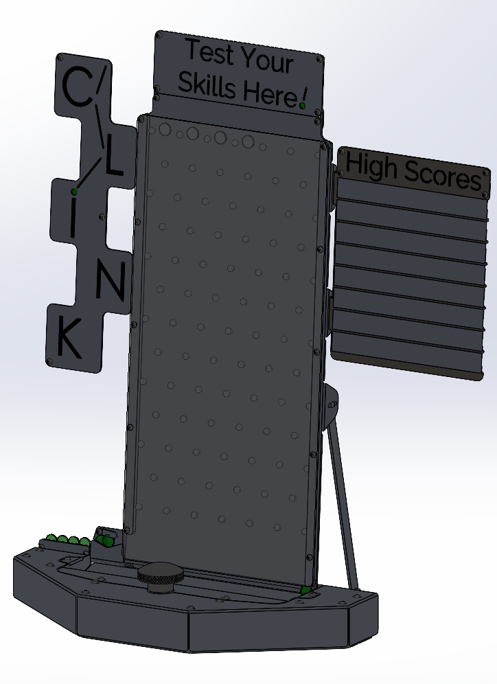
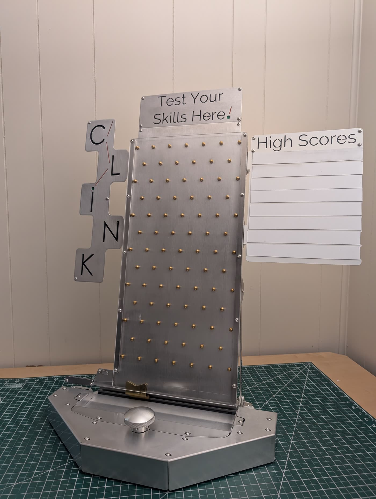
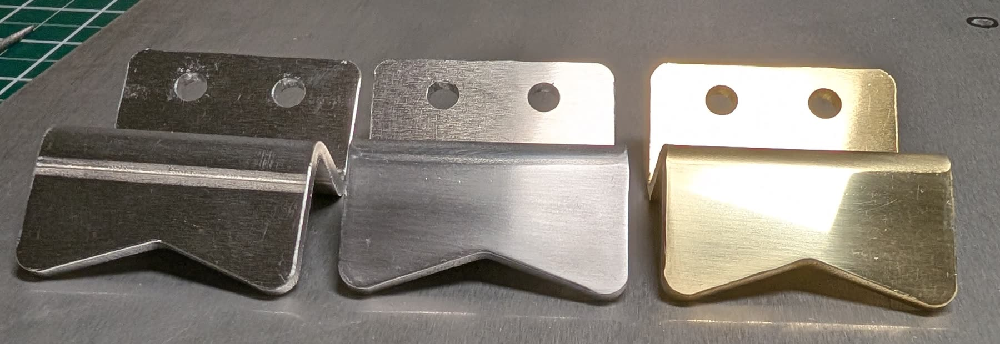

Hardware Product
Clink
A tabletop skill game built to stop people walking past a trade show booth.
00Summary
Real attention, not a glance
Trade show booths fight for a few seconds of attention, and most of them fight with screens. Clink takes the opposite approach: a physical game people put their hands on.
Discs drop through rows of brass pins. The player turns a knob to slide a brass catcher back and forth along the bottom and tries to catch as many as they can. A high score board on the side lets visitors compete against each other, and sometimes against their competitors.
The point isn't the game. It's holding a prospect at the booth long enough for a salesperson to have a real conversation, and giving them something they'll remember after the show.
- Project
- Clink
- Type
- Hardware, tabletop skill game
- Materials
- Aluminum sheet, brass pins, hand-polished brass catcher
- Status
- Complete
- My Involvement
- All concept, design, and fabrication.
01Design to Build


02Gameplay
03Finding the Clink
Ear-catching, not headache-inducing
The name is the sound, so the sound had to be right. It needed to cut through a noisy show floor and pull people over, without driving the salespeople standing next to it crazy by day three.
I tested both aluminum and brass pins against seven disc materials and recorded thousands of drops. Then I compared the recordings in the frequency domain to find the combination with the right mix of brightness and ring.
Turn your sound on for the video. That's the one that won.
| Pin / Disc | 5052 Al | Brass | Copper | 304 SS | Gr 5 Ti | Acrylic | Hardboard |
|---|---|---|---|---|---|---|---|
| Aluminum | tested | tested | tested | tested | tested | tested | tested |
| Brass | tested | tested | tested | tested | tested | tested | tested |
04Finish

3x the cost for the catcher
Unfinished aluminum would have been the cheapest catcher by far. The brass one costs three times as much and gets polished by hand every time, but nothing catches the eye like brass under show floor lights. It's also the part the player watches the whole game.
05Designed to Draw a Crowd
Random events
No two drops fall the same way. It's the same pull as dice, card packs, and every arcade game that has ever eaten a quarter.
Physical interaction
A real knob with real weight and resistance. Hands-on feedback sticks in memory in a way a touchscreen can't.
Competition
The high score board turns one player into a crowd. A prize for the top score at the end of the show keeps them coming back.
Movement and sound
Falling discs and a steady clink draw people over to see what's going on, and keep the people watching hooked.